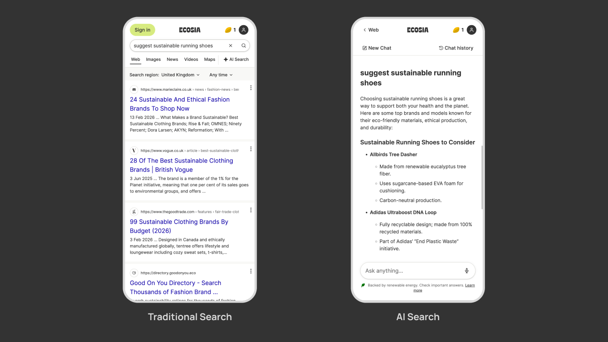
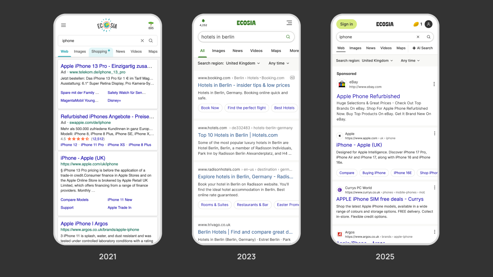
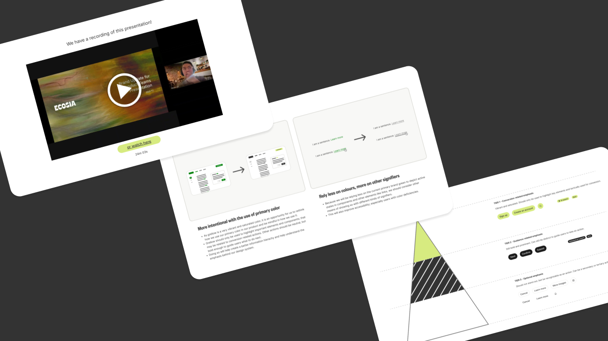
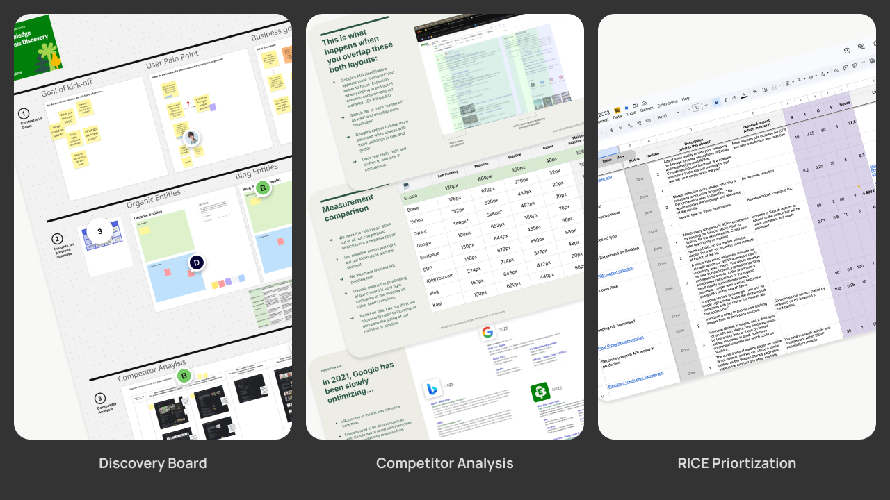
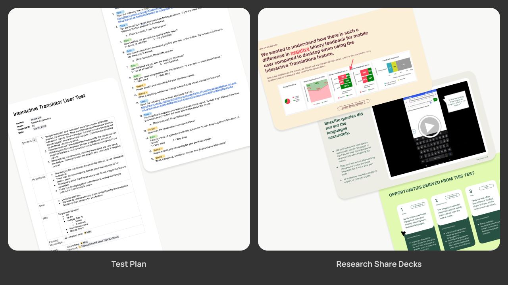
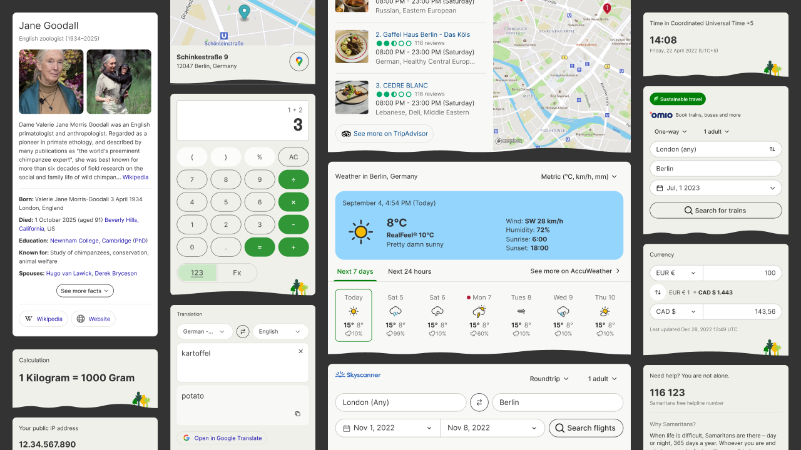
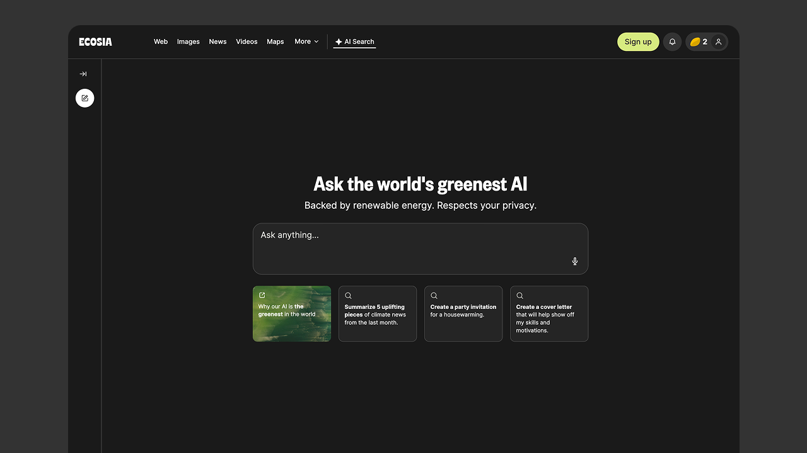
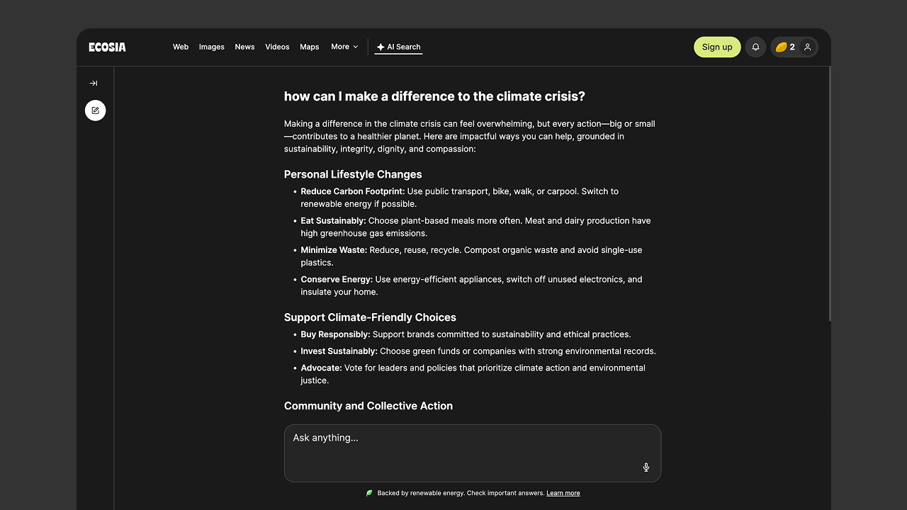

By 2024, the rapid advancement of Large Language Models (LLMs) fundamentally shifted user expectations away from traditional search. For Ecosia, relying solely on legacy search models was no longer a sustainable long-term strategy for growth or monetization. The core challenge was a delicate balancing act: addressing the skepticism of our environmentally-conscious 'power users' who feared AI’s carbon footprint, while simultaneously evolving the product to meet the demands of a new, AI-driven audience to prevent churn and remain market-relevant.
...better transition users from what they are used to from using Google to Ecosia?
...surface green alternatives without green-washing the users?
...make our search experience unique to for USP?
...improve the quality perception of our answers?

Collaborating across two product teams, I led the design evolution of the core search results page. My work centered on three pivotal milestones that integrated a major brand refresh with data-driven optimization. By balancing brand identity with iterative A/B testing, I delivered a more cohesive user experience while successfully driving an uplift in key performance indicators, specifically Click-Through Rate (CTR).

During a company-wide rebrand, I spearheaded the translation of our new visual identity into the core product. Collaborating with both internal teams and external agencies, I developed a strategic roadmap to ensure the brand language felt native to the user experience rather than just an aesthetic layer. To drive alignment, I tailored my communication for different audiences: presenting strategic vision and UX impact to stakeholders and product teams, while delivering technical specifications and design system requirements to engineering teams.

My process begins with rigorous alignment on requirements and business goals. For larger initiatives, I facilitate discovery workshops with PMs, engineers, and stakeholders to co-create solutions and manage expectations. During these sessions, I synthesize user research, competitive benchmarking, and BI data to anchor our brainstorming in evidence. To manage complex scopes, I leverage the RICE framework to prioritize high-impact experiments and break down large-scale initiatives into actionable phases.

I maintained full-cycle ownership of user research; from defining initial hypotheses and test plans to executing moderated and unmoderated studies via UserTesting.com. I transformed raw findings into synthesized, actionable insights, presenting them to cross-functional stakeholders to drive data-informed design decisions and product strategy.

I built a library of Rich Content features. These are smart, easy-to-read cards on the main search results page like weather, maps, and calculators that give users instant answers directly on the search page. By developing a unified visual language for these components, I ensured a cohesive Ecosia brand experience that remains distinct from competitors. This is also an opportunity for us to partner with other companies like Omio, to develop features that promote greener travel alternatives.


Working with two other product designers, I led the redesign of our AI search experience as part of a major company-wide rebrand. We evolved the tool into a modern, answer-first interface to meet the demand for AI while providing a greener alternative to competitors. Despite some initial backlash from legacy users, the redesign led to a measurable uplift in traffic and usage, proving that the new experience successfully captured a larger, modern audience.